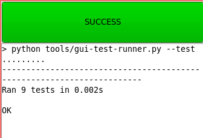
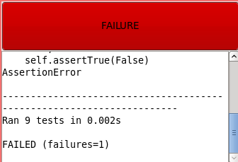

Closing the feedback loop
Published on 3 March 2012.
This post was originally published 4 July 2010. The blog it was published on is no longer active, and I therefore decided to move the post over here.
I never used the tool I describe in this post. I guess it was because I could run my tests as fast from within Vim. However, after watching Bret Victor’s amazing talk Inventing on Principle, I was inspired to build a tool like this again. It should be able to visualize more aspects of your code other than the tests passing or failing. The goal should be to give you quicker feedback on your changes. I shall write more about my attempts at building this tool in the future.
I have recently spent some time reading the book Working Effectively with Legacy Code by Michael Feathers. I find it interesting because it describes techniques for making bad code better.
Feathers defines legacy code as code that does not have tests and further argues that code without tests is bad code. If you believe in this statement and have the intention of converting a piece of legacy code to code that is tested you face a problem: legacy code is often hard to test because it often has many dependencies that are hard to construct in tests. The main part of the book describes techniques for solving this problem: getting tests in place for legacy code.
In one of the introductory chapters the author talks about the effect that feedback has on changing code. Feedback here means the time it takes before you see the effect of a change in the code. If you have to manually perform some action in a GUI to see the effect of a change it will probably take you a minute ore two. If you have to do that many times you will perhaps become frustrated and bored. If you instead can run a set of automated tests to ensure that your change is good, the thing that you are working on can be implemented faster. The shorter the feedback loop, the better.
If you work in this modify-test fashion, you are likely leaving your editor and pressing a button to run your tests after you have finished an edit. In the book, Feathers suggests that this cycle can be shortened by running the tests continuously. In particular, the tests could be run as soon as you type a key in your IDE. That sounded interesting to me so I decided to implement a simple application for use in the Timeline project that do something similar.
The application is a small GUI application that looks like in the pictures below. When you start it, it will run all tests (using the console based test script) and display the output. If all tests passed the top part will become green, otherwise it will become red. The special thing with this application is that it monitors the file system for changes and whenever it detects a change, it runs the tests again. So as soon as you hit save in your editor, the tests will run again automatically. That way you never have to leave your editor to find out how the change you made in the code affected the system. (Of course this relies on writing tests as well as code.)

The application is running the tests on start-up. It will also re-run them every time it detects a change in a file.

The application ran the tests and they all passed.

The application ran the tests and some of them failed. You can quickly edit your code to try to fix the errors, and when you save, you find out if you fixed them or not.
I will start using this tool when working on Timeline and see how it affects my productivity and code quality.
What is Rickard working on and thinking about right now?
Every month I write a newsletter about just that. You will get updates about my current projects and thoughts about programming, and also get a chance to hit reply and interact with me. Subscribe to it below.